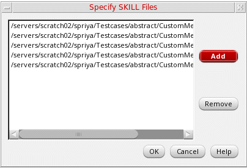
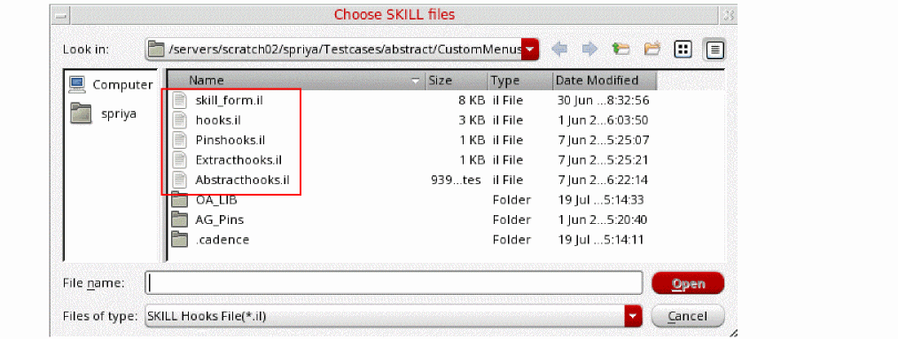

Customizing Abstract Generator Flow Using SKILL Files
You can use custom SKILL code to customize the Abstract Generator flow for specific tasks that cannot be performed using the options in the Abstract Generator form. The custom code, written in a SKILL file, is also called a SKILL hook file.
After creating the required SKILL hook files, select the SKILL hooks to run during the abstract generation flow as follows:
-
In the Abstract Generator form, choose Tools – Specify SKILL Files.
The Specify SKILL Files form is displayed.
 -
Click Add to display the Choose SKILL files window.
 -
Select the required SKILL hook files and click Open.
The selected files are listed in the Specify SKILL Files form. - Click OK.
The selected SKILL hook files are run as part of a customized abstract generation flow when you click Generate Abstracts in the Abstract Generator form. You can remove one or more SKILL files from the subsequent runs in case they are not required.
Related Topics
Customization of the Abstract Generation Flow
Return to top